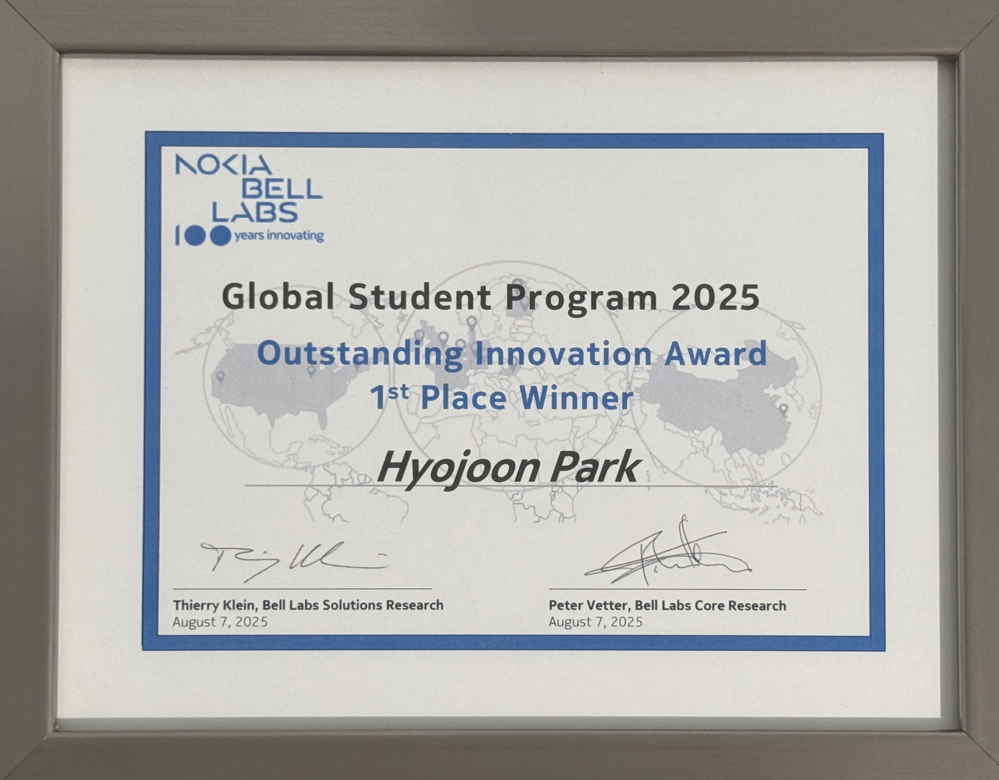
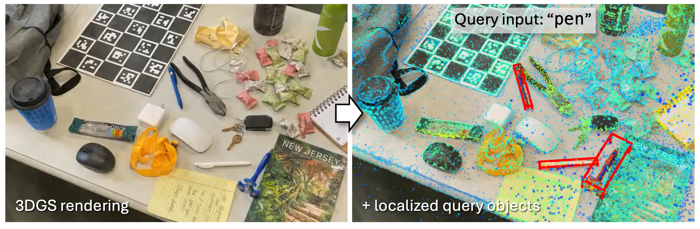

Student Researcher
Looking forward to a new journey!
Industrial Metaverse Intern
Selected as the 1st Place Winner among 100+ global interns for the project "Empowering Digital Twins with Precise Physical Registration and Language-Awareness".  The project renders 3D scenes in real-time using 3D Gaussian Splatting with precise physical registration (scale and orientation) to match the real world. It incorporates language features enabling users to query and locate objects within the scene via natural language input.
Software Intern – Physics-Based Simulations
Developed age-augmented 3D face models and a framework for inferring 3D face geometry from a single portrait image.
Graduate Research Assistant
University of Utah (Prof. Ladislav Kavan)
Project “Capturing Detailed Deformations of Moving Human Bodies” published at SIGGRAPH 2021
[paper].
Open-sourced a multi-camera calibration framework
[github].
Research Intern
Korea Institute of Science and Technology (KIST)
Project “Adaptive Precision-Enhancing Hand Rendering for Wearable Fingertip Tracking Devices” published at IROS 2020 [paper].
Military Interpreter (육군 영어 어학병)
Republic of Korea Army
Completed full 21 months of mandatory military service as a military English interpreter.